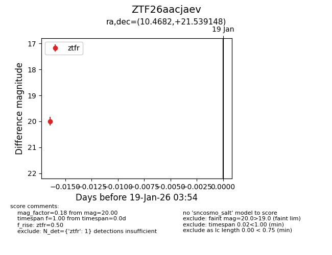
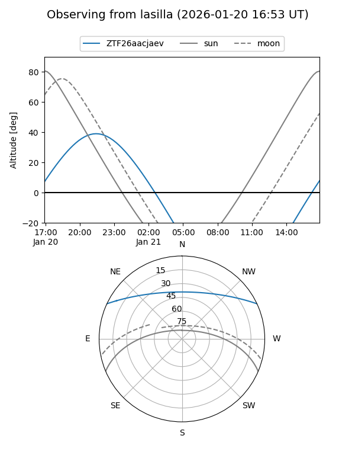
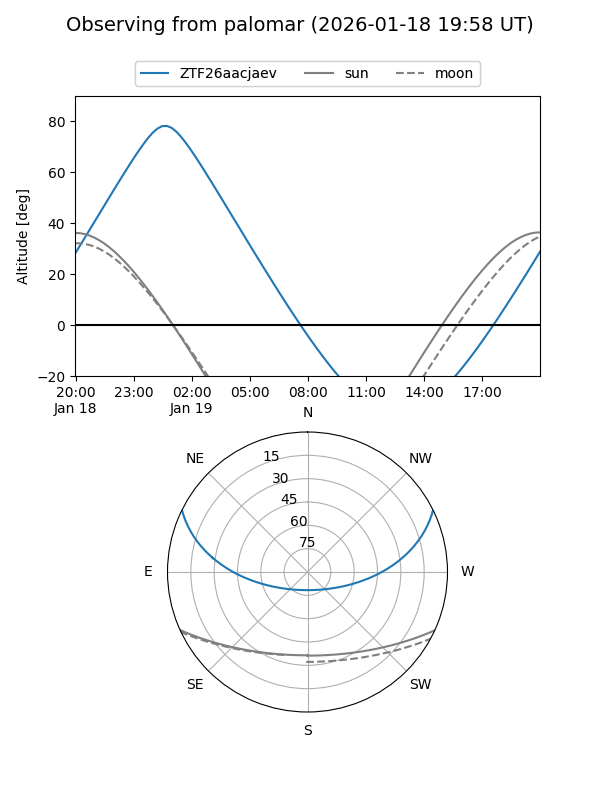

ZTF26aacjaev
Target ZTF26aacjaev at 2026-01-19 03:55
Aliases and brokers:
FINK: link
Lasair: link
ALeRCE: link
alt names
ZTF26aacjaev (ztf,fink_ztf)
Coordinates:
equatorial (ra, dec) = 10.4682,+21.53915
equatorial (HMS+DMS) = 00:41:52.37,+21:32:20.93
galactic (l, b) = (119.9718,-41.27762)
Flags:
Photometry:
last ztfr=20.00
1 ztfr detections
Lightcurve

Visibility


Additional plots